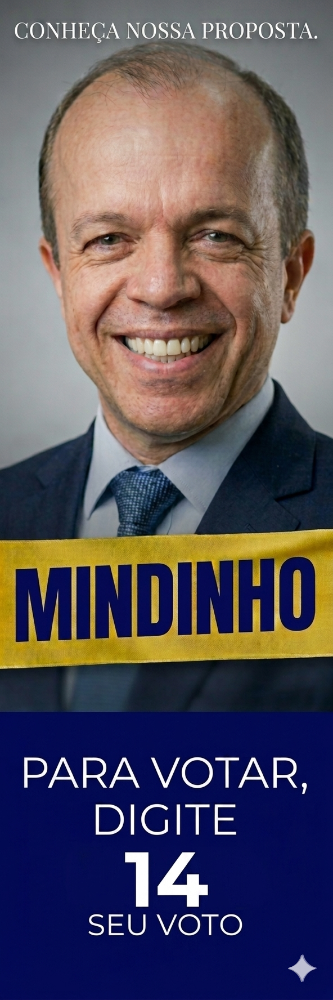
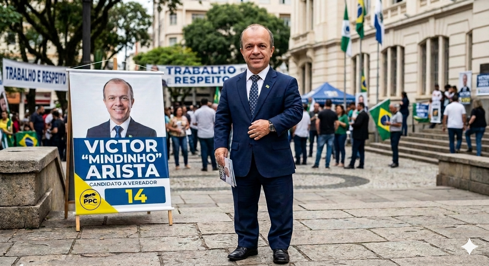
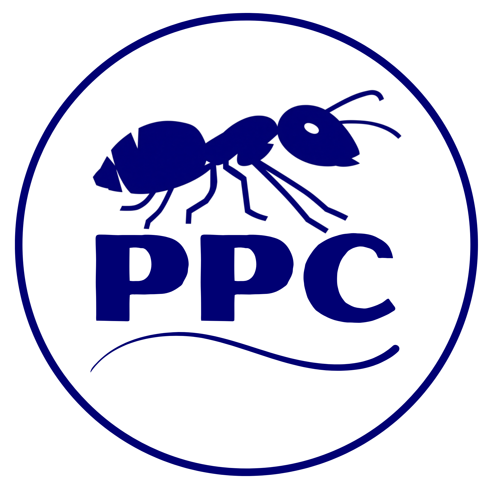
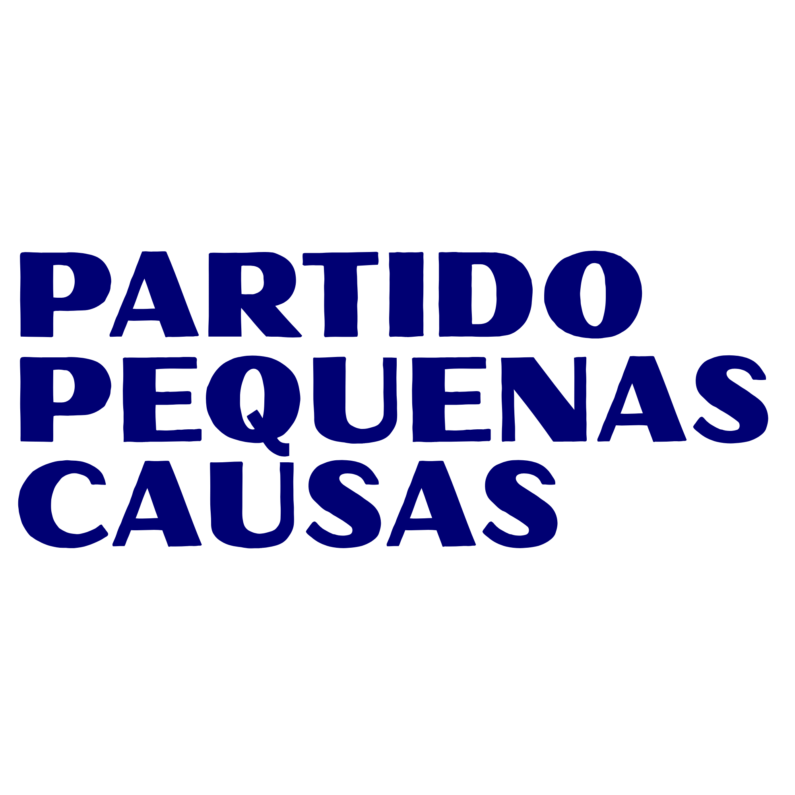
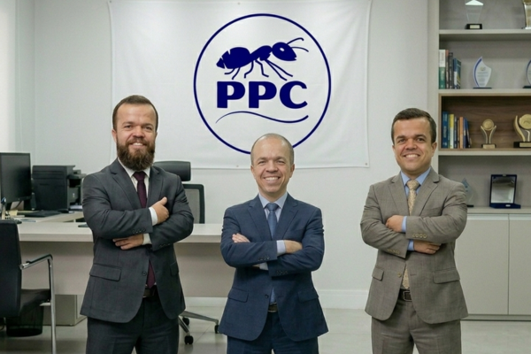
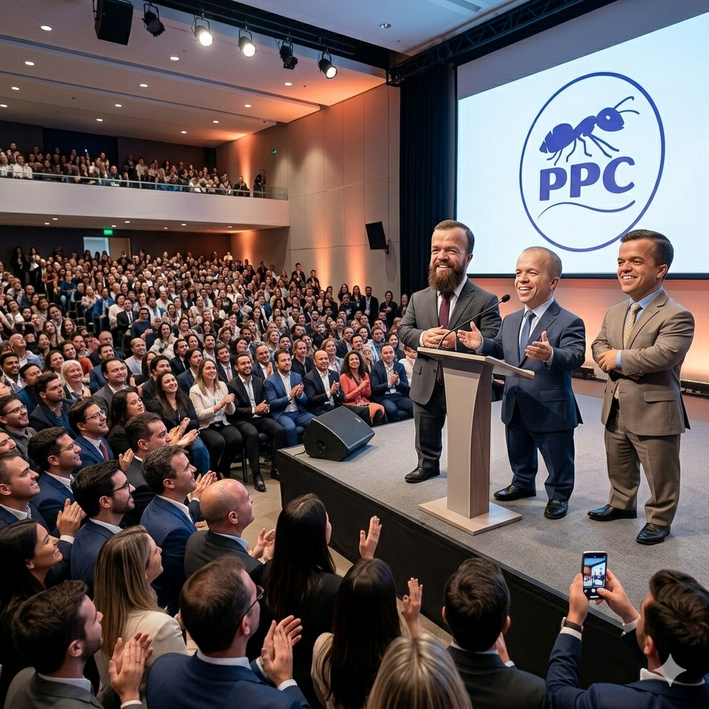
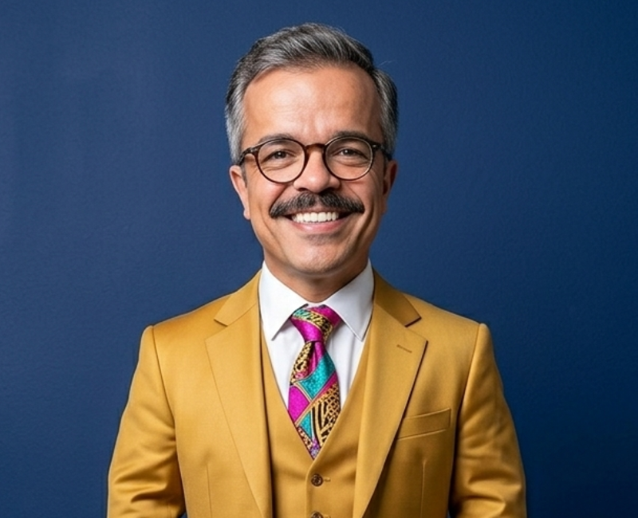

Victor Arista - Mindinho
Candidato a vereador de Manuel Ribas
Quem é o Mindinho?
Victor Arista, ou como prefere ser chamado, Mindinho, creceu em São Paulo, nasceu em 1991 e atualemente tem 35 anos. Cresceu muito feliz e amado por seus pais, sempre teve sua família como inspiração para seguir em frente. Se formou em Direito e se especializou em Direitos Urbanisticos e Direitos Difusos. Após concluir sua graduação, Ele se mudou para Manuel Ribas para ajudar sua avó doente, onde fundou suas raizes e conquistou todos a sua volta. Atualmente Mindinho faz parte do PPC - Partido das pequenas causas. O partido buscava pessoas fortes mentalmente e que tivessem experiências próprias para ajudar o povo, e Mindinho se encaixava perfeitamente.
Por que a candidatura?
Desde pequeno, ou melhor, desde quando era criança, Mindinho sempre precisou lidar com barreiras físicas e com preconcietos por conta de sua condição. Isso o desmotivou bastante durante sua carreira, porém abriu os olhos para as injustiças que foram cometidas com ele e todas as pessoas com sua condição. A partir disso, ele percebeu que se alguém não tentasse mudar isso, eles continuariam vivendo tristes e menosprezados, assim ele ingressou para a política. Entre suas propostas, Mindinho visa dar acessibilidade a todas as pessoas que sofrem por conta de condições físicas ou mentais de que não possuem culpa.




O PPC, conhecido formalmente como Partido das Pequenas Causas, fundamenta sua existência na premissa de que a verdadeira política se faz prestando atenção aos detalhes do dia a dia que as grandes legendas costumam ignorar. Longe de focar apenas em grandes reformas macroeconômicas ou disputas ideológicas profundas, a ideologia do partido se concentra no micro, ou seja, na resolução de problemas práticos que afetam a rotina das pessoas comuns, como a melhoria de um serviço de bairro, a desburocratização de pequenos negócios e o acolhimento de grupos historicamente marginalizados que não encontram espaço nas grandes pautas nacionais. Para o PPC, nenhuma demanda cidadã é insignificante, o que fez com que o partido se tornasse um refúgio para lideranças comunitárias autênticas que buscam transformações reais de curto prazo na infraestrutura urbana e nos direitos civis locais.

O PPC nasceu formalmente no início dos anos 2000, fruto da articulação de movimentos comunitários, líderes de bairros e associações de moradores de periferias urbanas. Eles sentiam que as grandes siglas políticas priorizavam debates ideológicos macroeconômicos em detrimento dos problemas práticos enfrentados pela população nas cidades.
Um de seus principais idealizadores e fundadores foi o líder comunitário e ex-metalúrgico Geraldo Vandão Santos. Vandão defendia que a política municipal precisava ser "descomplicada" e focar naquilo que ele chamava de "o varejo da cidadania": o buraco na rua, a rampa de acessibilidade que faltava no posto de saúde e o horário do ônibus. Sob essa premissa, o PPC obteve seu registro oficial, adotando uma postura de independência em relação aos blocos tradicionais de esquerda ou direita.
Marcos Importantes para o PPC:
-
2004 (A Primeira Grande Janela): Nas eleições municipais daquele ano, o partido conquistou suas primeiras cadeiras em câmaras de vereadores de capitais e cidades de médio porte, chamando a atenção pela eficiência em campanhas de baixíssimo custo e forte apelo popular.
-
2012 (A Consolidação da Bancada da Inclusão): O PPC passou por uma reformulação interna, passando a acolher ativistas de causas específicas que não encontravam espaço nos grandes partidos, como defensores dos direitos de pessoas com deficiência, idosos e microempreendedores informais.